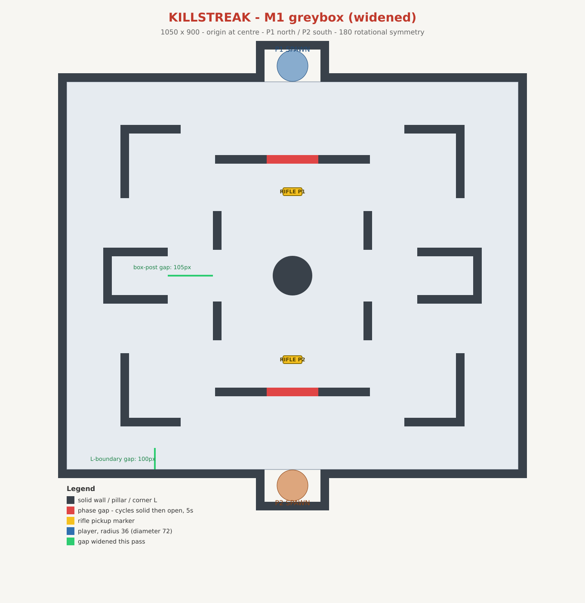
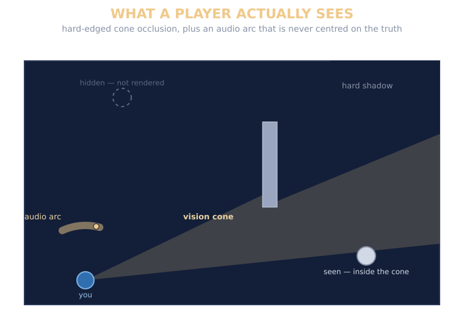

Killstreak
A top-down 1v1 tactical shooter where the map is always visible but the opponent isn't — a rotating vision cone decides what either player can actually see, and everything else in the design exists to make that restriction interesting instead of frustrating.

The pitch
Killstreak is a 1v1 shooter played from directly above, but the top-down camera is a bit of a trick: it shows the whole arena's geometry at all times, and nothing about its contents. The opponent, every gun on the ground, every thrown weapon — none of it exists on your screen unless it falls inside your vision cone, a slice of the map in front of wherever you're currently aiming. Turning to check a doorway means turning your gun away from whatever's in front of you right now. That trade is the entire game.
Everything downstream of that idea is built around four rules: information is the resource that actually decides rounds, not health or ammo; every weapon better than the starting pistol lives on the map, so contesting it is the main thing a round is about; matches are deliberately memoryless — no upgrades, no carryover, a clean slate every round; and standing still is the most accurate way to shoot, but the map is built so that never moving loses anyway.
Seeing and being seen
The camera itself is static and shows the whole arena at once — no scrolling, no zoom — but each player's view is independently rotated so their own spawn sits at the bottom and they always play "upward," the way a fighting game keeps both players facing in. That flip only ever touches rendering and input; the simulation itself runs on one shared coordinate frame, which matters once the game is networked and both peers have to agree on what actually happened.
The cone itself is built from Godot's 2D lighting system rather than a hand-rolled visibility check — a spotlight standing in for a sightline, with wall geometry acting as light-blockers. Hidden means genuinely not drawn: hard-edged occlusion, no soft shadows or falloff, so a visible edge always means something real about the geometry rather than a lighting artifact.
Sound fills the gap the cone leaves. Footsteps outside your vision surface as an arc of possible bearings rather than an exact position — narrower for a loud, distinct sound, wider for a quiet one — and the true direction deliberately sits somewhere off-centre within that arc, so a player can't just learn to aim at its middle. Distinct events like a reload or a pickup show up as a marker instead, since what matters there is what happened, not roughly where.

Weapons on the ground, one at a time
Every player starts with a pistol and nothing else; every stronger weapon is a pickup placed by the map. The catch is that you can only ever hold one gun — taking a new one off the ground means throwing your current one away first, and with no mid-round respawns, losing that exchange can leave you weaponless for the rest of it. That cost is deliberate: it's what makes holding an angle with the pistol a real alternative to walking into a contested pickup, rather than the game always demanding you go take it.
Throwing isn't just a way to free your hands — a thrown weapon travels fast enough to do real damage on impact, bounces off walls and cover instead of stopping dead, and keeps whatever ammo was loaded when it left your hand. Arming your opponent by throwing an empty gun at them is an intentional, if desperate, option.
Map geometry is the other lever on top of that. The Milestone 1 arena gates each side's rifle behind a wall that cycles between solid and open on a timer, telegraphed just before it flips, so contesting the better weapon is a question of timing as much as positioning. It's built as a general tool available to any map rather than a rule baked into the system — a future map might use several walls on different timers, or none at all.
A slower kill, on purpose
Time-to-kill is noticeably slower than a game like CS2, and it gets slower still at range through a damage falloff curve. The reasoning is specific to the vision-cone format: with a fast kill, whoever spots the other player first simply wins, and every round collapses into "who guessed the right angle" — a coinflip dressed up as a gunfight. A longer TTK gives the player who gets caught out a real window to turn, dash, or break line of sight, which is also why reloading is slow and loud — a real commitment, not a formality — and why getting hit always shows a directional indicator toward the shooter, from any angle. The goal is for an ambush to start a fight, not end it before it began.
Building it networked from day one
Milestone 1 runs networked over LAN from the start rather than as a local build retrofitted later — server-authoritative, with clients sending input and the server deciding what happened. That choice was made with one eye on the future: every piece of gameplay state — positions, health, ammo, even the map's own random numbers — was built from the beginning to be readable and restorable as a single snapshot, on a fixed timestep, with nothing hidden away in the scene tree. That discipline is what let internet play get pulled forward and actually work: adding client-side prediction for movement later was a matter of plugging a rollback library into an already-deterministic simulation, not restructuring one that wasn't.
The one place prediction and server authority have to meet is a shot. Movement is predicted locally so it feels instant, but hit detection stays fully server-side and unpredicted — deliberately, since a game built around sudden, close-range reveals is the last place you want a guessed outcome. Instead, the server keeps a short buffered history of where the opponent actually was and checks a shot against their position rewound by the shooter's own round-trip time, so real internet latency doesn't turn a shot that looked clean into a miss against a target that had already moved by the time it arrived.
Where it stands
Milestone 1 — a LAN-playable prototype — is fully built: server-authoritative movement, vision-cone rendering and occlusion, hitscan combat, the ground-weapon pickup/throw loop, and round reset. Internet play was pulled forward ahead of schedule, running through a dedicated host with client-side movement prediction and lag-compensated hit detection. The visual side of the audio-as-information system — arcs and symbols — is also built; the actual sound layer isn't wired in yet. What's outstanding is the thing Milestone 1 exists to answer: a full playtest on two separate machines, to see whether contesting weapons under vision cones produces real decisions or just two players holding angles.
What's next
The immediate next step is that playtest — the spread, TTK, and timing numbers in the design doc are starting points, and tuning them against real two-player sessions is Milestone 1's actual deliverable. After that: wiring real sound into the audio system that's already built for it, then round structure and the match-level streak win condition, with grenades and penetrable cover under consideration for a later pass.
Design document available on request.